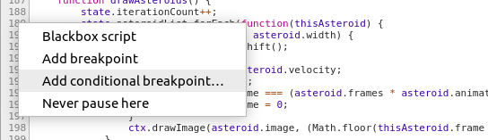
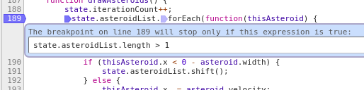
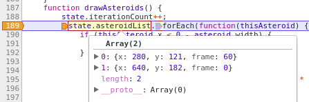
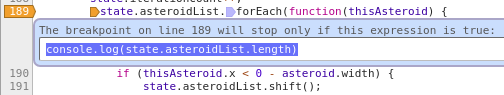

Conditional Breakpoints In Chrome DevTools
A really useful feature that I often find myself using in Chrome DevTools is conditional breakpoints. Conditional breakponts allow you to only pause execution when a certain expression evaluates to true, meaning that you can pause it when you want it to.
How to use conditional breakpoints in Chrome DevTools
In the “Sources” panel in Chrome DevTools, open the JavaScript file that you want to debug.
Right click on the line number of the line you want to add the breakpoint to and select “Add conditional breakpoint”.

Add your conditional statement into the text box. Your condition must be truthy when you want it to break. In my example I want it to break when there is more than one asteroid in the list.

When you run the code and the condition is met, the breakpoint will be fired and code execution will be paused!

Because the condition is executed each time that breakpoint is checked, you could even have it run other code. A great example would be when you’re trying to log out some input from a certain point in code, but can’t edit the source (e.g. when debugging built/live code).
